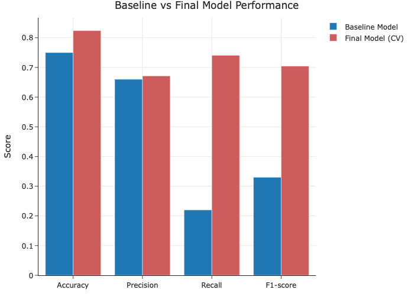
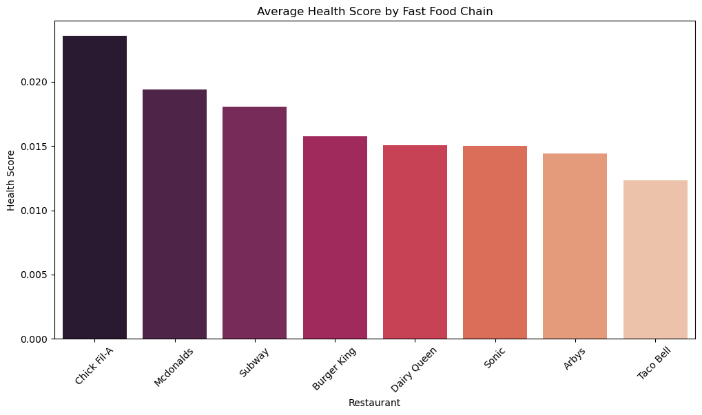
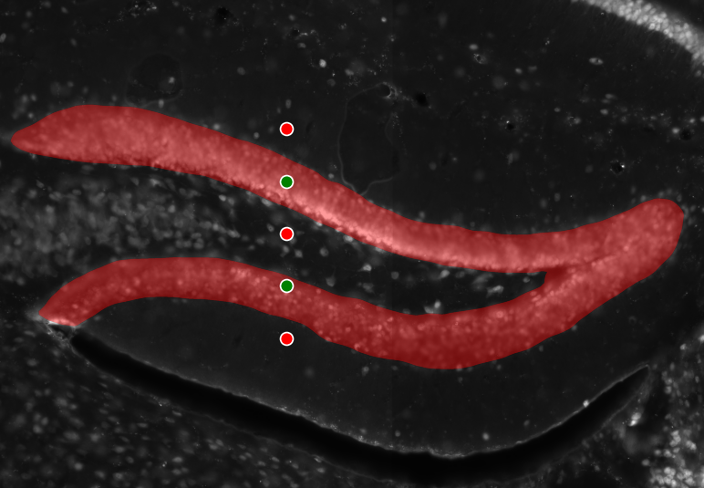

Here you'll find a collection of my work in data science, machine learning, and applied research.
Tastes Like Data: Baked Goods Classifier

A machine learning project analyzing 83,782 recipes from Food.com to classify baked goods using nutritional data. Features exploratory data analysis, statistical inference, and Random Forest modeling with 82.4% accuracy.
View Project →
Fast Food Unwrapped

A comprehensive analysis of fast food nutrition data exploring patterns in calories, fat content, and nutritional composition across major restaurant chains.
View Project →
Hippocampus Segmentation

Collaborative research project using Segment Anything Model (SAM) for automated hippocampus segmentation in medical imaging. Features blood vessel detection, training databases, and advanced computer vision techniques for neuroscience applications.
View Project →